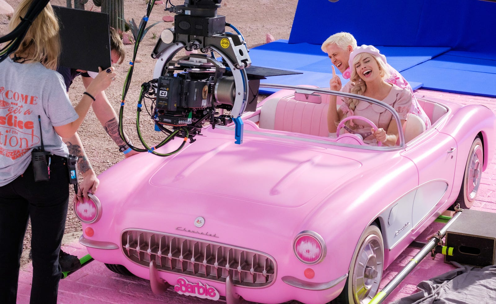
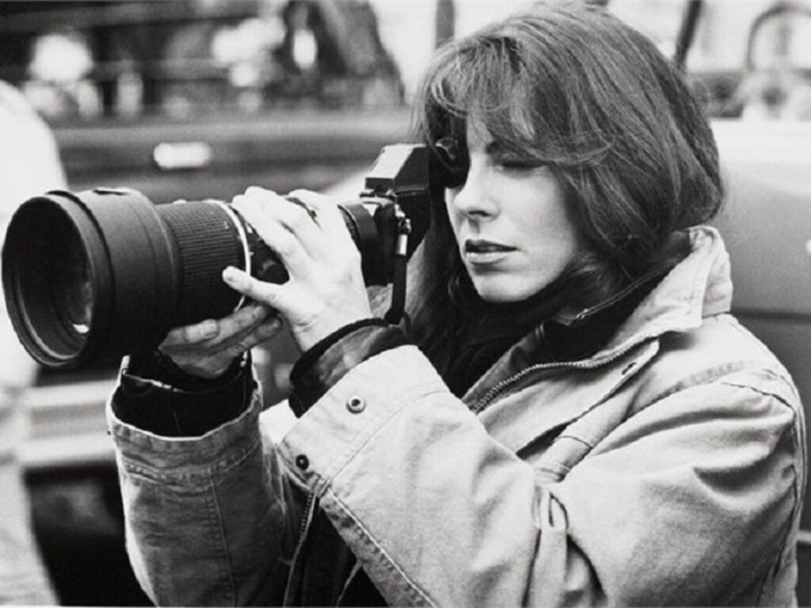
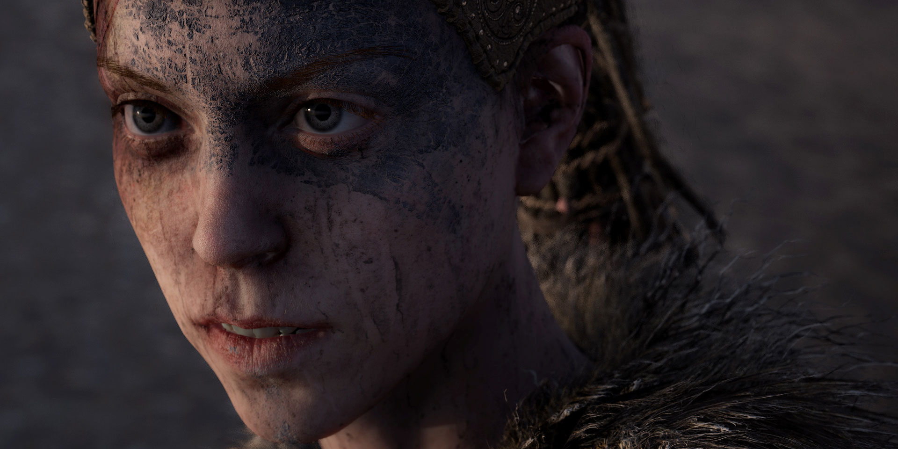
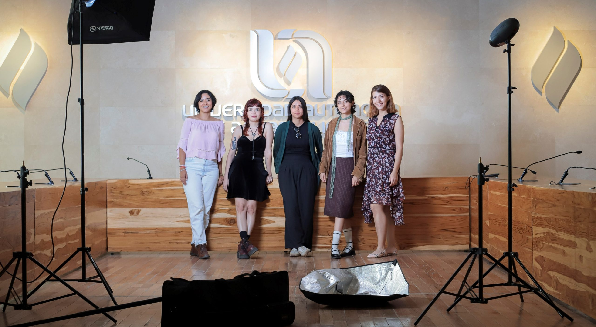

Ejes de Acción
Objetivo Específico 1: Ámbito Cultural
- Producción Audiovisual
Producir y difundir 8 piezas audiovisuales (4 cortometrajes de 10–15 min + 4 cápsulas de 3–5 min) con perspectiva de género que cuestionen estereotipos y presenten representaciones diversas de las mujeres, logrando su exhibición en 3 plataformas digitales/espacios culturales y 6 proyecciones públicas en municipios del Estado de México, alcanzando audiencias directas de 500+ personas, durante 18 meses.

Margot Robbie y Ryan Gosling en el rodaje de Barbie.
Metas Operativas
- Meta 1.1: Desarrollar 8 guiones con perspectiva de género documentando el proceso creativo (Meses 1–6)
- Meta 1.2: Producir 4 cortometrajes (10–15 min) priorizando participación de mujeres técnicas del Edomex (Meses 7–14)
- Meta 1.3: Producir 4 cápsulas audiovisuales (3–5 min) con perspectiva de género (Meses 7–14)
- Meta 1.4: Establecer convenios con 3 plataformas de exhibición: espacios culturales, cinetecas y plataformas digitales (Meses 1–9)
- Meta 1.5: Realizar 6 proyecciones públicas en 6 municipios con encuestas post-proyección para medir impacto (Meses 15–18)

Kathryn Bigelow (Estados Unidos, 1951).
Objetivo Específico 2: Ámbito Social
- Visibilzación de Creadoras
Producir y difundir 8 piezas audiovisuales (4 cortometrajes de 10–15 min + 4 cápsulas de 3–5 min) con perspectiva de género que cuestionen estereotipos y presenten representaciones diversas de las mujeres, logrando su exhibición en 3 plataformas digitales/espacios culturales y 6 proyecciones públicas en municipios del Estado de México, alcanzando audiencias directas de 500+ personas, durante 18 meses.
Metas Operativas
- Meta 2.1: Identificar y contactar 20 creadoras y 8 estudios independientes mediante convocatoria abierta y mapeo local (Meses 1–3)
- Meta 2.2: Realizar entrevistas en video a 15 creadoras seleccionadas documentando trayectorias y logros (Meses 4–8)
- Meta 2.3: Producir 15 perfiles escritos y audiovisuales profesionales de las creadoras (Meses 6–10)
- Meta 2.4: Crear plataforma web/micrositio con directorio interactivo por especialidad, experiencia y ubicación (Meses 5–9)
- Meta 2.5: Implementar estrategia de difusión en redes sociales alcanzando 10,000 personas (Meses 10–12)
- Meta 2.6: Organizar exposición física/híbrida con el trabajo de las 15 creadoras en espacio cultural del Edomex (Mes 12)
Objetivo Específico 3: Ámbito Educativo
- Formación y Sensibilización
Generar 6 espacios de reflexión y formación (2 talleres prácticos, 2 conversatorios con creadoras, 1 panel con expertas, 1 cineclub con análisis crítico) sobre representación de género en medios audiovisuales, capacitando a mínimo 150 personas del Estado de México en análisis crítico de contenidos con perspectiva de género, produciendo documento de buenas prácticas, en 12 meses.

Videogame: Hellblade: Senua's Sacrifice.
Metas Operativas
- Meta 3.1: Diseñar contenidos y metodologías para 6 espacios formativos diferenciados (Meses 1–2)
- Meta 3.2: Establecer alianzas con 3 instituciones educativas del Estado de México (Meses 1–4)
- Meta 3.3: Implementar los 6 espacios formativos garantizando mínimo 25 personas por evento, total 150+ (Meses 5–12)
- Meta 3.4: Desarrollar materiales didácticos disponibles como recursos educativos de acceso libre (Meses 4–12)
- Meta 3.5: Aplicar instrumentos de evaluación pre y post en cada evento para medir cambios de actitud (Meses 5–12)
- Meta 3.6: Sistematizar aprendizajes y producir documento de buenas prácticas para análisis audiovisual con perspectiva de género (Mes 12)

Mujeres cineastas conquistan FOCINE y refuerzan comunidad cinematográfica local. UAA (2025).
Objetivo Específico 4: Ámbito Laboral
- Económico - Red Colaborativa
Conformar una red colaborativa de 30 creadoras, estudios independientes e instituciones aliadas que facilite el intercambio de experiencias, recursos y oportunidades laborales, estableciendo 5 alianzas estratégicas (2 educativas, 1 cultural, 1 gubernamental, 1 de financiamiento) y gestionando mínimo 2 oportunidades concretas de financiamiento o producción para integrantes, en 10 meses.
Metas Operativas
- Meta 4.1: Realizar diagnóstico de necesidades de mujeres creadoras del Edomex (Meses 1–2)
- Meta 4.2: Diseñar modelo de funcionamiento de la red (estructura, mecanismos, plataforma tecnológica) (Mes 3)
- Meta 4.3: Convocar e incorporar 30 integrantes: 25 creadoras individuales y 5 estudios/colectivos (Meses 4–6)
- Meta 4.4: Implementar plataforma digital para intercambio de convocatorias y oportunidades (Mes 7)
- Meta 4.5: Establecer 5 alianzas estratégicas: 2 educativas, 1 cultural, 1 gubernamental, 1 de financiamiento (Meses 6–10)
- Meta 4.6: Organizar 3 encuentros presenciales de networking entre integrantes (Meses 7, 9 y 10)
- Meta 4.7: Gestionar al menos 2 oportunidades concretas de financiamiento o producción (Meses 8–10)

Grace Ashcroft' Resident Evil Requiem, Capcom.